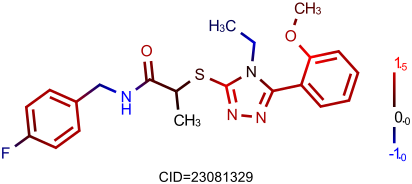

Atom Coloring¶
This example shows how to highlight different molecule atom based on the set of functional groups and their activities. For example, we have functional groups with positive and negative activity and want to color molecule according to this activity. Activity for each atom can be expressed as a sum of activities of each group that atoms belongs to divided by the functional group size.
Atom coloring feature was introduced in the Indigo 1.1.11.
Note
not all the browsers support gradients in the SVG images that are used on this page
Functional groups highlighting¶
First, we can define an arbitrary set of functional group patterns and assign activity for each of them:
# Active fragment patterns
patterns = [
("C-O", +1.0),
("C=O", +2.0),
("C-N", -1.0),
("C-C-n", -1.0),
("C-C=C", +1.5),
("C-F", -1.0),
("*:*", +1.0), # aromatic bond
("C-[Cl]", -1.0),
("C-S-C", 1.0),
]
For a specified molecule one can fine all the embeddings of fragment patterns, and accumulate activity for each atom that was matched:
import collections
def getAtomsActivity (m):
# Create substructure matcher for the specified molecule
matcher = indigo.substructureMatcher(m)
atom_values = collections.defaultdict(float)
for pattern, value in patterns:
# Load query molecules from the pattern
query = indigo.loadQueryMolecule(pattern)
# Iterate all the embeddings
for match in matcher.iterateMatches(query):
for qatom in query.iterateAtoms():
# Map query atom to the target atom to find atom index
atom = match.mapAtom(qatom)
# Accumulate activity value for this atom
atom_values[atom.index()] += value / query.countAtoms()
return atom_values
The following code prints activity value for a given structure:
# Load structure
m = indigo.loadMolecule('CC1=C(Cl)C=CC2=C1NS(=O)S2')
activity = getAtomsActivity(m)
for index, value in activity.iteritems():
print("Atom %d: %0.2f" % (index, value))
# Enable rendering of atom indices
indigo.setOption("render-atom-ids-visible", "true");
indigoRenderer.renderToFile(m, 'result.png')
{kind=link}

Atom 1: 1.00
Atom 2: 0.50
Atom 3: -0.50
Atom 4: 1.00
Atom 5: 1.00
Atom 6: 1.00
Atom 7: 0.50
Atom 8: -0.50
Let’s assign a color for each atom based on its activity: negative values are colored from blue to back, and positive values are colored from back to red. Indigo Renderer interprets data s-groups with a specified name as a color for the atoms.
def addColorSGroups (m, atom_values):
# Color [min_value, max_value] by linear interpolation
min_value = min(atom_values.itervalues())
max_value = max(atom_values.itervalues())
# Interpolate atom_values
for atom_index, atom_value in atom_values.iteritems():
if atom_value < 0:
color = "0, 0, %f" % (atom_value / min_value)
else:
color = "%f, 0, 0" % (atom_value / max_value)
# Add data s-group with color for this atom
m.addDataSGroup([atom_index], [], "color", color)
return min_value, max_value
Previous two methods can be wrapped into a single method that computes atom activities and colors molecule atoms accoring to these activities:
def assignColorGroups (m):
atom_values = getAtomsActivity(m)
# `atom_values` is a map between atoms and their activities
# Color molecule atoms based on this activity
min_value, max_value = addColorSGroups(m, atom_values)
# pass bounds for further processing
return min_value, max_value
For the visualizations below we are going to use the following options:
indigo.setOption("render-atom-color-property", "color")
indigo.setOption('render-coloring', False)
indigo.setOption('render-comment-font-size', 14.0)
indigo.setOption('render-bond-line-width', 2.0)
Wrapping all these method one can color and render an arbitrary molecule:
# Load structure
m = indigo.loadMolecule('[O-][N+](=O)C1=CN2CC3(CCN(CC3)C(=O)OCC3=CC=C(C=C3)C(F)(F)F)OC2=N1')
assignColorGroups(m)
indigoRenderer.renderToFile(m, 'result.png')
{kind=link}
Color bar¶
Annotations, color bars, axis grid and other additional graphics are out of scope of Indigo Renderer module. But we can make a trick and render a color bar as tree connected pseudoatoms with a numeric label and with assigned colors. The following code adds a color bar atoms right to the molecule:
def addAtomColorbar(m, min_value, max_value):
# Add "color bar" via atoms
m.layout()
x0, y0 = 0, 0
if m.countAtoms() > 0:
x0 = max(a.xyz()[0] for a in m.iterateAtoms())
y0 = min(a.xyz()[1] for a in m.iterateAtoms())
a1 = m.addAtom("%0.1f" % min_value)
a1.setXYZ(x0 + 2.0, y0, 0)
a2 = m.addAtom(" 0.0")
a2.setXYZ(x0 + 2.0, y0 + (-min_value) * 2, 0)
a3 = m.addAtom(" %0.1f" % max_value)
a3.setXYZ(x0 + 2.0, y0 + (-min_value + max_value) * 2, 0)
a1.addBond(a2, 1)
a2.addBond(a3, 1)
m.addDataSGroup([a1.index()], [], "color", "0, 0, 1")
m.addDataSGroup([a3.index()], [], "color", "1, 0, 0")
Standalone color bar looks in the following way:
# Load structure
m = indigo.createMolecule()
addAtomColorbar(m, -2.0, 3.0)
indigoRenderer.renderToFile(m, 'result.png')
{kind=link}
Overall example for a single molecule:
# Load structure CID=23081329
m = indigo.loadMolecule('CCN1C(SC(C)C(=O)NCC2=CC=C(F)C=C2)=NN=C1C1=CC=CC=C1OC')
min_value, max_value = assignColorGroups(m)
addAtomColorbar(m, min_value, max_value)
indigo.setOption('render-comment', "CID=23081329")
indigoRenderer.renderToFile(m, 'result.png')
{kind=link}
Rendering a set of molecules in a grid¶
Atom coloring works not only for a single structure but for grid rendering too.
# Load structure
file = "data/pubchem-9-rand.smi"
array = indigo.createArray()
for m in indigo.iterateSmilesFile(file):
min_value, max_value = assignColorGroups(m)
addAtomColorbar(m, min_value, max_value)
m.setProperty("grid-comment", "CID=%s" % m.name())
array.arrayAdd(m)
indigo.setOption("render-bond-length", "14")
indigo.setOption("render-grid-title-font-size", "8")
indigo.setOption("render-grid-margins", "20, 10")
indigo.setOption("render-grid-title-offset", "5")
indigo.setOption("render-grid-title-property", "grid-comment")
indigoRenderer.renderGridToFile(array, None, 3, 'result.png')
{kind=link}
Content of the file data/pubchem-9-rand.smi with 9 randomly selected molecules that is used in the example above:
O(C(CCC)=O)[C@]1(C(COC(CC)=O)=O)CC[C@H]2[C@@H]3CCC4=CC(CC[C@]4(C)C3C(C[C@@]21C)O)=O 51627
O=C1N(CCCN2CCOCC2)C2=CC=CC=C2N1C1CCN(C(CN2C(=O)OC3=CC=CC=C23)=O)CC1 44529597
ClC1C=CC(=CC=1S(NC(C)(C)C)(=O)=O)C(=O)OCC(N1CCCCC1CC)=O 46791269
O=C(C1C=CN=CC=1)NC1C(C)(C)C2C=C(C3CCC(NN=3)=O)C=CC=2N=1 23052301
S(C1C=CC(=CC=1)F)C1C=C(C=CN=1)CN 43528886
O=C(C1CCCN1)NC(C(NC(C(NCC(=O)O)=O)CCC(N)=O)=O)CCC(=O)O 20011576
S(NCCC1C=CC(C(=O)O)=CC=1)(N1CCOCC1)(=O)=O 43234910
ClC1=CC=CC(=C1)N(C(C[C@H](C)C1C=CC=CC=1)=O)[C@@H](/C=C/CCC)C(NC1CCCCC1)=O 51736875
BrC1(C=CC=CC1)S(NC1C=CC(C)=CC=1)(=O)=O 504161